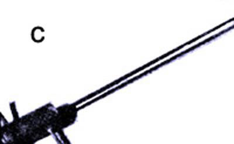

Dr. E.A. Farber
[c] This sun-powered thermo-phase, shift reciprocating engine consists essentially of a column of water inside a tube which has a bellows at its top. As the liquid is vaporized and condensed by solar heat, its movement operates the bellows which-in turn-can spin a flywheel at several hundred rpm.